nps内网穿透【p2p模式】详细教程-纯净docker方式
nps内网穿透【p2p模式】详细教程-纯净docker方式---吾爱破解原网页链接
吾爱破解原网页 PDF 格式文件
0：为什么要用P2P模式，因为点对点，不消耗你VPS或独服的流量，假如你买的是国内VPS或独服本身因为价格和国情的原因，流量就吃紧，假如要传送一个几十G的数据，用传统TCP 穿透 模式，你传送多少流量，你的VPS就消耗多少流量，而且p2p模式一旦握手成功，就直接交给2端独立通讯，自身是断开的，并且速度快于TCP
1：首先准备一台有公网IP的VPS或独服（作为NPS服务端，在P2P模式下确切的说是验证握手中间端，除非你作为TCP模式下的穿透，那么就真的是一个服务端了。）
2：在VPS或安装好docker(怎么安装docker就不说了，太简单了。)
安装NPS的Docker镜像我这里选择的是ffdfgdfg/nps，只需2条命令：
①docker pull ffdfgdfg/nps
②docker run -d --restart=always --name nps --net=host -v /root/docker/nps/conf:/conf ffdfgdfg/nps
[上面的命令，其中/root/docker/nps/conf可自己指定，我这里是为了方便]
3：SSH连接上你的VPS，ffdfgdfg/nps默认nps的配置文件在上面命令指定的目录里，也就是/root/docker/nps/conf
vi /root/docker/nps/conf/nps.conf
或
nano /root/docker/nps/conf/nps.conf
打开后编辑以下几个地方即可：
①【必须】p2p_ip=121.281.131.127 （<----你VPS或者独服的公网IP地址，记住不要填写域名）
p2p_port=6000 (<----任意端口，官方默认6000，但是防火墙一定要放行6000-6002,IP段，而不是只放行6000,以此类推，假如你改成7000端口，那么放行7000-7002,很多人穿透失败就是这一步没做)
②【必须】web_username=admin (任意用户名)
web_password=hostloc （任意密码）
web_port =8880(<--任意，防火墙记得打开)
③【可选】http_proxy_port=800（如果你所在的VPS，80端口已经在用了，这里改一下）
https_proxy_port=4433 （如果你所在的VPS，443端口已经在用了，这里改一下）
④保存退出vi或者nano,并重启一遍镜像。
--------------------------------------------------------------------------------------------------------------------------------------
虚线以上的安装和设置过程，大家应该还是搞的清楚的，下面就要说一下，应用场景了。
①我们刚刚在一台VPS或者独服上，安装了Docker-并部署了nps-但是它现在的身份不是服务端，而是一个中间件，只做验证服务，并不参与2端的传输
②假设：我办公室的电脑想用任意（远程桌面软件客户端）-------去连接家里的电脑的任意（远程桌面软件服务端），要怎么做呢？
③很简单：把家里电脑（远程桌面的服务端端口）-----用p2p方式穿透到-----办公室电脑（系统下的任意指定端口）中---再用办公室电脑的（远程桌面软件客户端）去连接系统指定的本地的端口。（如果看的有点蒙，就多看几遍。）
-----------------------------------------------------------------------------------------------------------------------------------------------
实际举例场景：
①中国电信，办公室电脑Win10,安装了AnyDesk（作为客户端）
②中国移动，家里电脑Win10，安装了AnyDesk(作为服务端，这软件默认端口是7070)
③中国移动，家里电脑Win10,上安装NPC客户端(看清楚，是NPC，不是NPS)，有条件的最好装在软路由上，因为电脑经常要重启和关机，我这里就装在家里的软路由上了openwrt_x86_x64,先打开我们刚刚在VPS上安装的NPS看看用NPC去连接的配置信息
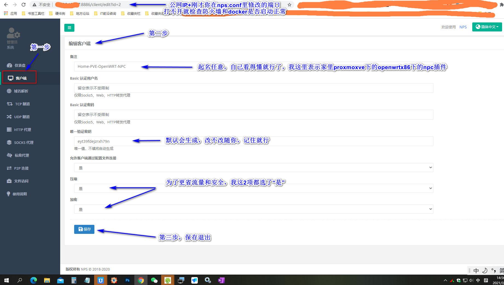
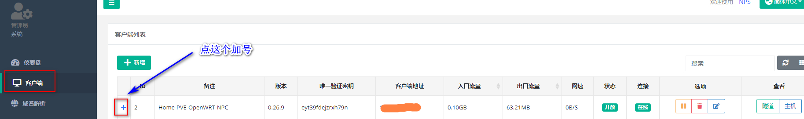
④中国移动，打开家里软路由openwrt的NPC插件，根据上面图片中的信息分别填写，公网IP+端口+密码，保存并应用即可。
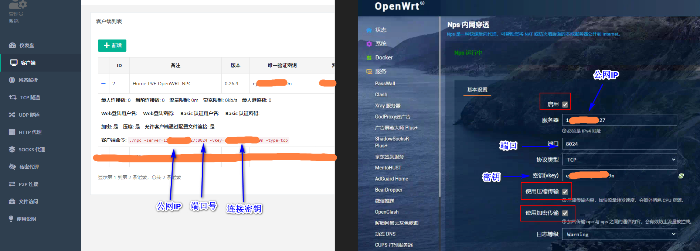
⑤设置NPS，启用其中一个连接方的P2P模式。
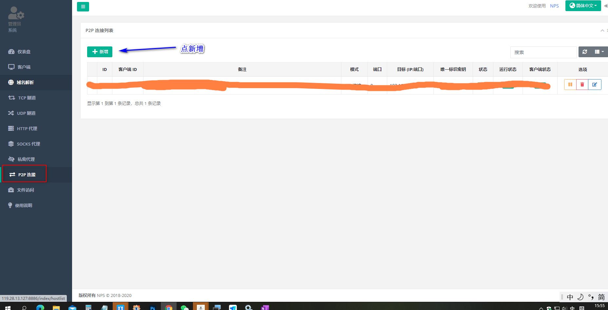
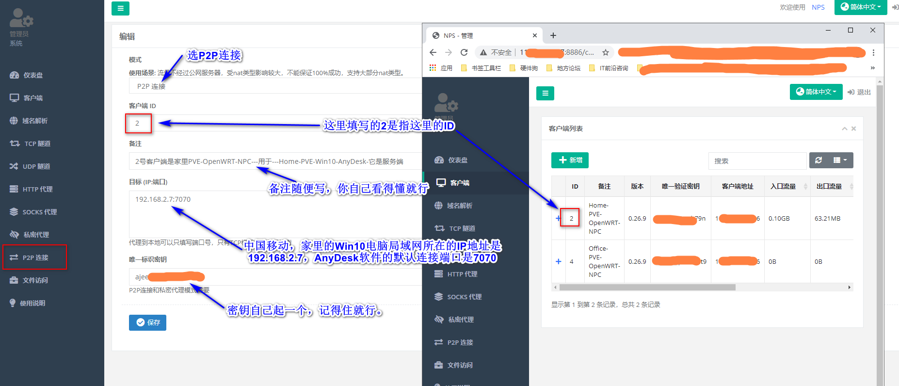
⑥在中国电信，办公室电脑里下载官方x64-NPC客户端，并安装成开机自启动服务
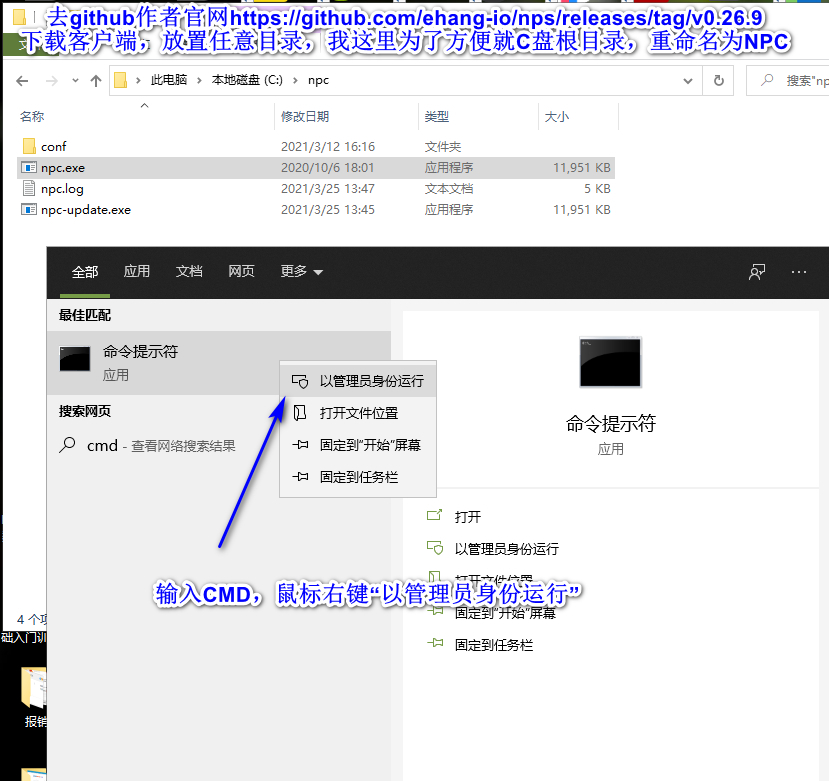
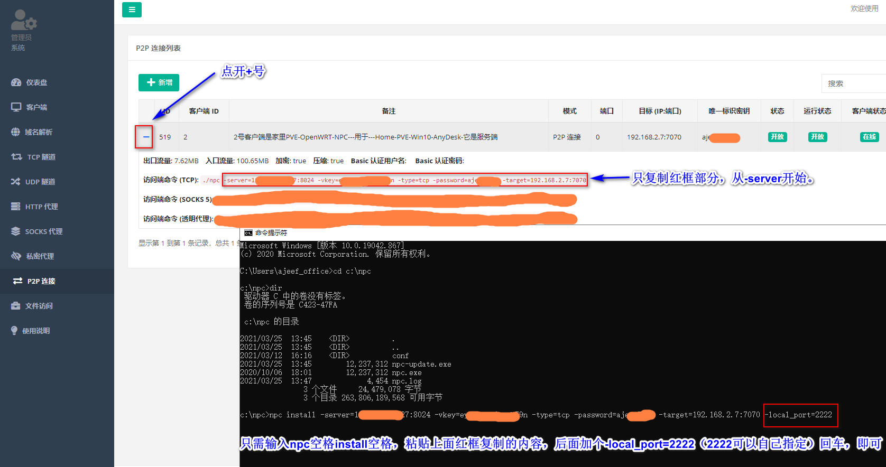
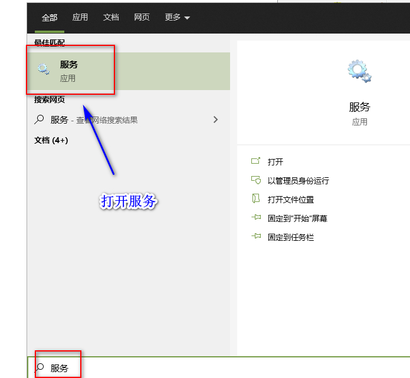
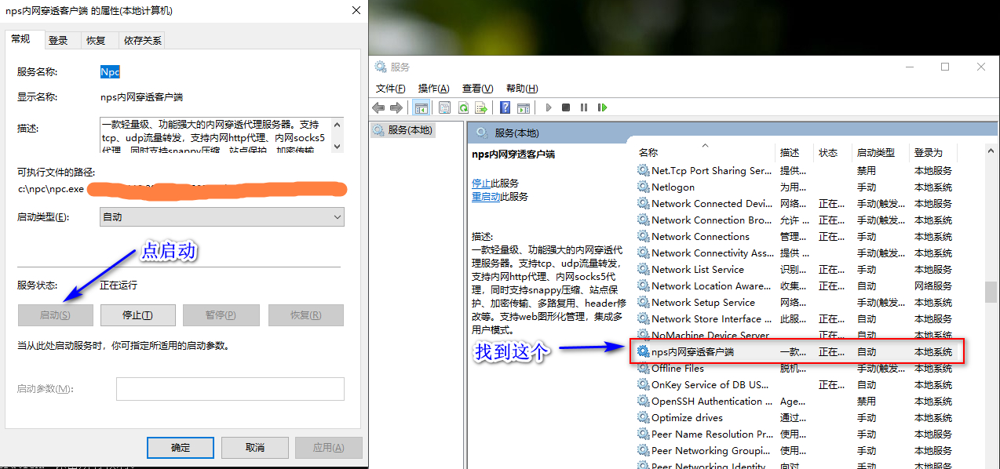
⑦在中国电信，办公室电脑Win10系统中打开AnyDesk,连接上面配置好的本地端口。
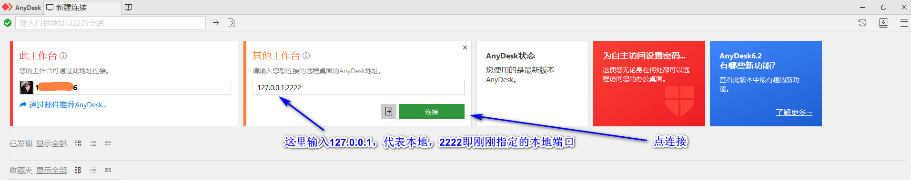
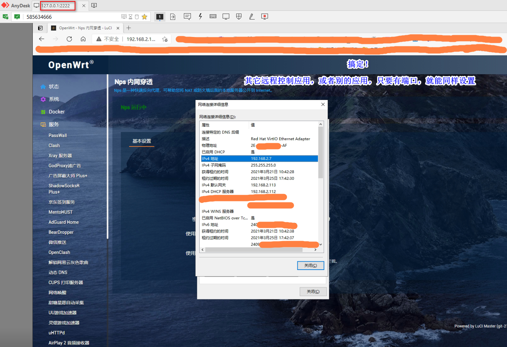
------------------------------------------------------------
教程结束，P2P模式，因为只需要验证的流量（极少），所以里传输多大的流量，都不影响VPS或者独服本身的流量，所以会大大减少你购买国内服务器的价格，流量甚至每个月几百M就够用了。
至于你们担心的ISP会QOS限制的问题，只要你是国内运营商连接国内运营商，可以是中国电信，中国移动，中国联通，都不会限制，除非你P2P模式连接的是国外ISP下的一台电脑，那么有可能会限制。